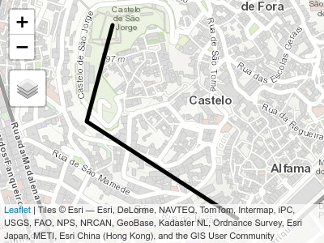
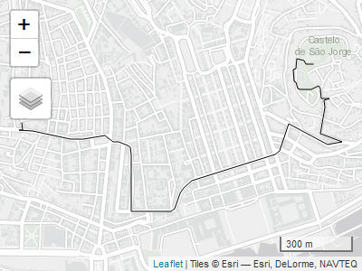
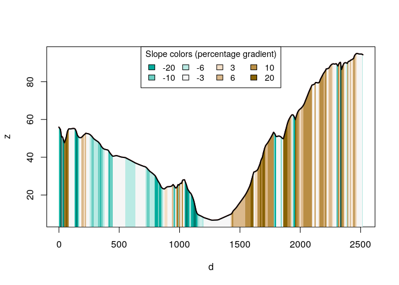
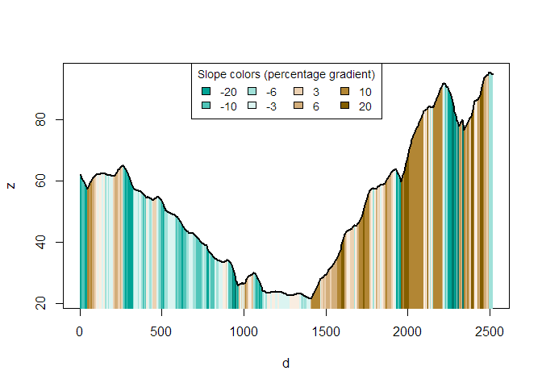

The slopes R package calculates the slope (longitudinal steepness, also known as gradient) of linear features such as roads and rivers, based on two main inputs:
-
vector linestring geometries defined by classes in the
sfpackage -
raster objects with pixel values reporting average height, commonly known as digital elevation model (DEM) datasets, defined by classes in the
rasteror more recentterrapackages
This README covers installation and basic usage. For more information about slopes and how to use the package to calculate them, see the slopes vignette.
Installation
Install the development version from GitHub with:
# install.packages("remotes")
remotes::install_github("itsleeds/slopes")If you do not already have DEM data and want to make use of the package’s ability to download them using the ceramic package, install the package with suggested dependencies as follows:
# install.packages("remotes")
remotes::install_github("itsleeds/slopes", dependencies = "Suggests")Furthermore, you will need to add a MapBox API key to be able to get DEM datasets, by signing up and registering for a key at https://account.mapbox.com/access-tokens/ and then following these steps:
usethis::edit_r_environ()
# Type in (register on the mapbox website):
MAPBOX_API_KEY=xxxxxBasic example
Load the package in the usual way:
We will also load the sf library:
The minimum input data requirement for using the package is an sf object containing LINESTRING geometries. You can check your input dataset is suitable with the functions class() from base R and st_geometry_type() from the sf package, as demonstrated below on the object lisbon_road_segment that is contained within the package:
class(lisbon_road_segment)
#> [1] "sf" "tbl_df" "tbl" "data.frame"
st_geometry_type(lisbon_road_segment)
#> [1] LINESTRING
#> 18 Levels: GEOMETRY POINT LINESTRING POLYGON MULTIPOINT ... TRIANGLEDon’t worry if you don’t yet have your linear features in this class: you can read-in data from a wide range of formats into an sf object. You can also create sf objects from a matrix of coordinates, as illustrated below (don’t worry about the details for now, you can read up on how all this works in the sf package documentation):
m = cbind(
c(-9.1333, -9.134, -9.13),
c(38.714, 38.712, 38.710)
)
sf_linestring = sf::st_sf(
data.frame(id = 1),
geometry = st_sfc(st_linestring(m)),
crs = 4326
)
class(sf_linestring)
#> [1] "sf" "data.frame"
st_geometry_type(sf_linestring)
#> [1] LINESTRING
#> 18 Levels: GEOMETRY POINT LINESTRING POLYGON MULTIPOINT ... TRIANGLEA quick way of testing if your object can have slopes calculated for it is to plot it in an interactive map and to check that underneath the object there is indeed terrain that will give the linestrings gradient:
library(tmap)
tmap_mode("view")
#> tmap mode set to interactive viewing
tm_shape(sf_linestring) +
tm_lines(lwd = 5) +
tm_basemap(leaflet::providers$Esri.WorldTopoMap)
Imagine you want to calculate the gradient of the imaginary route shown above, starting at the Castelo de São Jorge and descending towards the coast.
You can do this as a two step process as follows.
Step 1: add elevations to each coordinate in the linestring (requires a MapBox API key):
sf_linestring_xyz = elevation_add(sf_linestring)
#> Loading required namespace: ceramic
#> Preparing to download: 16 tiles at zoom = 17 from
#> https://api.mapbox.com/v4/mapbox.terrain-rgb/You can check the elevations added to the new sf_linestring_xyz object by printing its coordinates, as follows (note the new Z column that goes from above 90 m above sea level to only 24 m in a short distance):
st_coordinates(sf_linestring_xyz)
#> X Y Z L1
#> [1,] -9.1333 38.714 91.4 1
#> [2,] -9.1340 38.712 66.9 1
#> [3,] -9.1300 38.710 24.0 1Step 2: calculate the average slope of the linestring
slope_xyz(sf_linestring_xyz)
#> 1
#> 0.104923The result, just over 0.1, tells us that it’s quite a steep slope, a 10% gradient on average.
If you already have a DEM, you can calculate the slopes directly as follows, with slope_raster():
class(dem_lisbon_raster)
#> [1] "RasterLayer"
#> attr(,"package")
#> [1] "raster"
sf_linestring_proj = st_transform(sf_linestring, st_crs(lisbon_road_segment))
slope_raster(routes = sf_linestring_proj, dem = dem_lisbon_raster)
#> 1
#> 0.1218691Likewise, if your linestring object already has X, Y and Z coordinates (e.g. from a GPS device), you can use the slope_ functions directly. In any case, to use the slopes package you need elevation points, either as a vector, a matrix or as a digital elevation model (DEM) encoded as a raster dataset.
Calculating the gradient of roads
Typical use cases for the package are calculating the slopes of geographic objects representing roads or other linear features (not the imaginary line shown in the previous section). These two types of input data are represented in the code output and plot below.
# A raster dataset included in the package:
class(dem_lisbon_raster) # digital elevation model
#> [1] "RasterLayer"
#> attr(,"package")
#> [1] "raster"
summary(raster::values(dem_lisbon_raster)) # heights range from 0 to ~100m
#> Min. 1st Qu. Median Mean 3rd Qu. Max. NA's
#> 0.000 8.598 30.233 33.733 55.691 97.906 4241
raster::plot(dem_lisbon_raster)
# A vector dataset included in the package:
class(lisbon_road_segments)
#> [1] "sf" "tbl_df" "tbl" "data.frame"
plot(sf::st_geometry(lisbon_road_segments), add = TRUE)
Calculate the average gradient of each road segment as follows:
lisbon_road_segments$slope = slope_raster(lisbon_road_segments, dem = dem_lisbon_raster)
summary(lisbon_road_segments$slope)
#> Min. 1st Qu. Median Mean 3rd Qu. Max.
#> 0.00000 0.01246 0.03534 0.05462 0.08251 0.27583This created a new column, slope that represents the average, distance weighted slope associated with each road segment. The units represent the percentage incline, that is the change in elevation divided by distance. The summary of the result tells us that the average gradient of slopes in the example data is just over 5%. This result is equivalent to that returned by ESRI’s Slope_3d() in the 3D Analyst extension, with a correlation between the ArcMap implementation and our implementation of more than 0.95 on our test dataset (we find higher correlations on larger datasets):
cor(
lisbon_road_segments$slope, # slopes calculates by the slopes package
lisbon_road_segments$Avg_Slope # slopes calculated by ArcMap's 3D Analyst extension
)
#> [1] 0.9770436We can now visualise the slopes calculated by the slopes package as follows:

# mapview::mapview(lisbon_road_segments["slope"], map.types = "Esri.WorldStreetMap")Imagine that we want to go from Santa Catarina to the East of the map to the Castelo de Sao Jorge to the West of the map:
library(tmap)
tmap_mode("view")
#> tmap mode set to interactive viewing
qtm(lisbon_route)
We can convert the lisbon_route object into a 3d linestring object with X, Y and Z coordinates, as follows:
lisbon_route_xyz = elevation_add(lisbon_route, dem_lisbon_raster)We can now visualise the elevation profile of the route as follows:
plot_slope(lisbon_route_xyz)
If you do not have a raster dataset representing elevations, you can automatically download them as follows (a step that is automatically done in the function elevation_add() shown in the basic example above, results of the subsequent code chunk not shown):
dem_mapbox = elevation_get(lisbon_route)
lisbon_road_proj = st_transform(lisbon_route, raster::crs(dem_mapbox))
lisbon_route_xyz_mapbox = elevation_add(lisbon_road_proj, dem = dem_mapbox)
plot_slope(lisbon_route_xyz_mapbox)As outlined in the basic example above this can be done more concisely, as:
lisbon_route_xyz_auto = elevation_add(lisbon_route)
#> Preparing to download: 12 tiles at zoom = 15 from
#> https://api.mapbox.com/v4/mapbox.terrain-rgb/
plot_slope(lisbon_route_xyz_auto)
Code of Conduct
Please note that the slopes project is released with a Contributor Code of Conduct. By contributing to this project, you agree to abide by its terms.